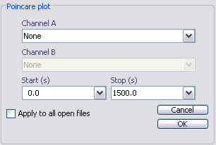

Joint Interval Distribution
Email: sigtool@kcl.ac.uk

Email: sigtool@kcl.ac.uk
Author: Malcolm Lidierth
Updated: June 2008
A Joint Interval Distribution shows the relationship between successive interspike intervals on an event channel. It shows the joint frequency distribution of the lengths of the nth and n+1th interpike intervals.
The method is derived from that described by Rodieck et al. (1962) and discussed in Dekhuijzenand et al. (1996).
Note that the Joint Interval Distribution provides an identical analysis to the Poincare plot but bins the data and presents them as a color level plot. With lengthy spike trains this can be much more memory efficient and therefore faster than the scatter plot used in the Poincare diagrams. It also often produces a more easily interpreted graphical result.

Select the channels to analyze in the Channel A selector.
Select the time range to analyze.
References
Rodieck R.W., Kiang, N.Y.-S. and Gertstein, G.L. (1962).Some quantitative methods for the study of spontaneous activity of single neurons. Journal of Biophysics 2, 352-368.[Link]
Dekhuijzenand, A. J. and Bagust, J. (1996) Analysis of neural bursting: nonrhythmic and rhythmic activity in isolated spinal cord. Journal of Neuroscience Methods, 67, 141-147. [Link]
© The Author and King's College London, 2008-